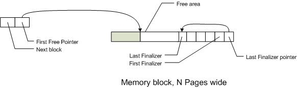
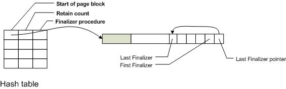

In this entry, I am going to describe a memory allocator I wrote a few years ago. I don't claim it is unique (never been done before), perfect, or even suitable for your tasks. It did, however, work very well for the application I had (a copy-paste detector, suitable, for another time)
I needed a memory allocator so that I would not have to include a separate C run time library. Because it was to support the kind of structures my program would use. It was half written anyway - the first gen layered my structuring mechanisms on top of the standard C run time library. The allocator I created can do malloc() / free() type allocations, direct-acyclic object graphs (including trees). It is a reference counting system, not a full-blown garbage collector.
Criterion. I was looking for something to meet the following criterion:
The API is very simple: a procedure to allocate and a procedure to free the memory.
void* MP_alloc (size_t Size, unsigned Align, unsigned Zone, void(*Finalizer)(void*))
void MP_free (void* Ptr);
The allocator takes four parameters:
Zone_pool is for most allocations. Zone_temp is used values that are part of an intermediary operation and will be released soon. Unless you know, just use Zone_pool.
In general, memory allocators tend to segment their allocations by size. They may use very different strategies for different allocations.
The second level manages fixed sized blocks allocated from the OS, and dolls out chunks of memory from these blocks. The blocks with free space - space that can be allocated - are tracked with a free list. The free list node and the referenced memory block work together, like so:

The free list nodes points to the first free area in the block. The block has a pointer of the last free area (the last finalizer). The difference between the two is the amount of free space in the block. This is a common type of allocation method called "grow to the middle," where the data allocations are placed at the low addresses and grow to the higher ones; management data is placed at higher addresses and grow to lower addresses.
The allocation process at this level is straightforward. First, the allocation size is rounded up so that the effective allocation size is a multiple of 2. The free list is then scanned to find the first block that has enough free space for the allocation (first fit rather than best fit). If there isn't a suitable block, it allocates a new block from the underlying OS, 64kb in size (twice the maximum allocation size)
Then the free list node is removed from the list - for thread safety reasons. (Two threads can't modify the same block at the same time.) Then it computes the start of allocation by moving the start of the free region so that the allocation is properly aligned. This will be the returned allocation pointer. Next, the free pointer is advanced past the end of the allocation. If the page has any free space left, the free list node is put back onto the end of the free list.
Note: this means that it never reuses an area of the page. It appends new allocations on the end of the last used area (the start of the first free area).
Temporary and intermediate allocations. There are actually more than one free list, which is used to group different types of allocations. A hint code can be passed to indicate which with free list to use. This indicates whether the allocation is likely to be short lived or long lived, and helps reduce memory consumption.
In some projects, I needed a "finalizer" for some objects. (But not all, so this is an optional element of the allocator). This is used to link to a procedure that knows what other resources an allocation is using, and release them (e.g. decrement the resources respective reference count). This is tracked as a pointer to the allocation and a pointer to the finalizer (destructor) procedure.
I use reference counting to track which blocks are in use or referenced. The system treats it as more important to not free a resource possibly in use over the risk of leaking memory by not freeing unused nodes. The reference tracking on a per block basis instead of tracking each allocation. Instead, it is done based on a group of pages (or the allocation of a very large node). It frees them all at once.

As you can see, the structure has a finalizer pointer; when the retain count goes less than zero, the finalizer is called. Typically, this frees the block. Big blocks (allocation strategy 1) just free the page. Allocation strategy 2 blocks call each of the finalizers for the block.
When everything in a block is free'd (the blocks retain count is less than 0) the page is free'd. The allocator caches a small number of free'd pages (the rest are returned to the OS). his reduces page churn when allocations come in rapid bursts (common with some execution patterns). Note for future: expand the size of the free group if allocation rate is higher than free rate.
As with reference counting systems, this system will leak memory if there are reference cycles. This allocator isn't intended to be used with them.
Let's take a moment to discuss some idea's about what could be done for performance.
Indexed free list. The free list could be indexed by the logarithm of free space. (Doug Lea made this famous). That is, a slot for 256 bytes (or less) free, a slot for 1024 bytes (or less) free, a slot for 4096 bytes (or less) free, and so on. It doesn't help since most of my allocations are almost all the same size (e.g. 64 bytes).
Block size. The 32kb size of the block was chosen since it worked well for me. Larger or smaller sizes are possible, but they should be a multiple of the OS's page group size. That is, it should be a multiple of the machine page size, and probably at least 4 or 8 pages in size. (OS's tend to allocate chunks of memory to process in terms of page groups not individual pages; this is done esoteric reasons)
This described a fast memory allocator I've used with several projects. It is based on allocating large blocks of memory (usually in units of pages) from the underlying OS. And it is reference-counting based, as a convenience.
A note on usage. The allocator I've described is intended for the production / deployment. When in development or debugging mode, you should use use the environments allocators, which often have debug support and heap checking. Then it can use this one.